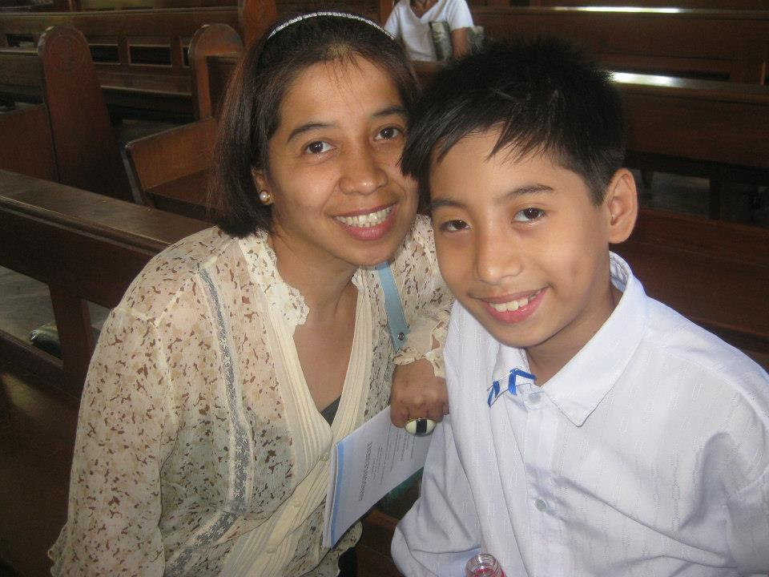
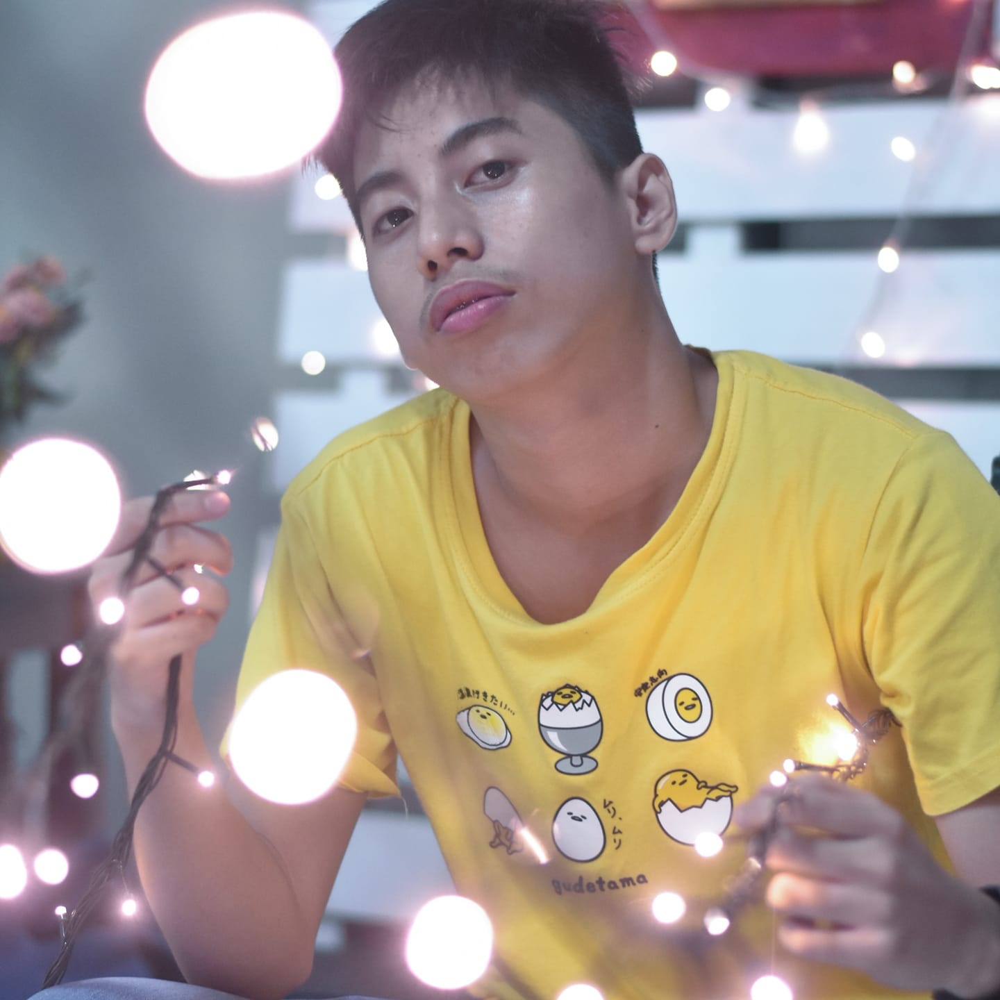
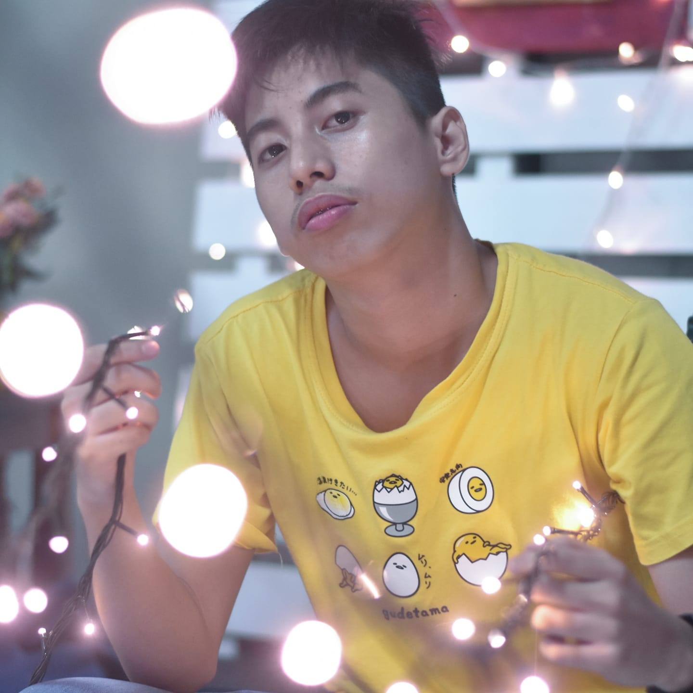

Through the Years
Childhood Years


Childhood memories are very important in our lives.1 It makes us remember the best times of our lives.2 They shape our thinking and future.3 Growing up, I had a very loving family.4 I had one sibling with whom I used to play a lot.5 I remember very fondly the games we use to play.6 Especially, in the evenings, we used to go out in the park with our sports equipment.7 Each day we played different games, for example, football on one day and cricket on the other.8 These memories of playing in the park are very dear to me.9 Furthermore, I remember clearly the aroma of my grandmother’s homemadeatchara.10 I used to help her whenever she madeatchara.11 We used to watch her do the magic of combining the oils and spices to make deliciousatchara.12 Even today, I can sometimes smell heratcharawhenever I look back at this memory.13 Most importantly, I remember this instance very clearly when we went out for a picnic with my family.14 We paid a visit to the zoo and had an incredible day.15 My mother packed delectable dishes which we ate in the zoo.16 My father clicked so many pictures that day.17 When I look at these pictures, the memory is so clear, it seems like it happened just yesterday.18 Thus, my childhood memories are very dear to me and make me smile when I feel low.19. I would treasure this childhood memories for the rest of my life.20Go Top
Teenage Years

The teenage years are the best years of one's life. 1Time and tide waits for no man.2 Although this saying may seem incredibly cliched, this proves to be the most truthful statement of all.3I will always remember my years of high school.4 All the people I met, the moments I lived, and the girls I have loved during this time have been and will be some of the best memories in my life.5 Even though we are a very small group, eight students to be precise, we have been together for many years and shared moments that have marked our lives in special ways.6 Looking back, I can see that it was through high school that many things changed in me that eventually made me become the person I am today.7 Each one of my high school years differ in some way or another and it was these differences that made each one a very special time in my life.8 My first year of Senior high school was one of the best but at the same time one of my hardest years.9 I remember falling in love for the first time with a girl and escaping from my house at night to see her.10 It was during this time that we as a family received the news that my grandmother was sick.11 I remember how we had to unite and be strong as a family to help my grandmother go through those hard moments and this made my view about my family change.12 But ultimately my grandmother died.13 Becuase of this, I started to appreciate what I had. 14 My second year was filled with no real preoccupations, parties, friends, and all the typical teenage stuff.15 I started to watch how many of my friends, who were seniors from the preview year, started to leave for college.16 I really missed them at the beginning of the year, but as time passed I got used to not having them around.17 When I look back, the memory is so clear, it seems like it happened just yesterday.18 Many have left and many others have arrived, and even though we are not together in school anymore, we continue being the big family we have always been.19. These are the people, memories, and feelings that I will always remember and I will carry with me wherever I go.20Go Top
College Years
 
College life experience is truly one of a kind. 1 The most common memories people have of college life are definitely goofing around with friends.2 They remember how the group of friends walked around the college in style and playing silly pranks on each other.3My first year at college has gone so much faster than any other year of my life. 4 I feel like I’ve been careening through my semesters at breakneck speed.5 I’ve tackled classes with subject matter far above my head and come out on top, and in the process, I’ve learned more than I ever thought I could.6 I feel so accomplished when I’m able to walk up to someone in the cafeteria and say hi!7 At the beginning of the year, I was lost in a sea of strangers, but now I recognize so many faces.8 There are things I wish I knew before the year began.9 Like if you see someone you want to be friends with, introduce yourself!.10 Join any clubs you find interesting. 11 If they take up too much time, you can always quit them later! And they’re also a great way to met people.12 Make time to study.13 It can be easy to get caught up going out and meeting people, but college classes move at a far faster pace than high school classes, so falling behind is doubly stressful.14 Find quiet places outside your room to study.15 Remember to get enough sleep, and look after yourself! 16 College makes you a stronger, more complete person.17 It might be difficult at first, but It has provided me with the necessary tools to enhance my skills more.18 College taught me valuable knowledge about this diverse world and people and concepts in general and eventually will enable me to hopefully become more successful in life when I finally graduate and get my degree.19 All these aspects of college have made me more well-rounded as a person.20Go Top